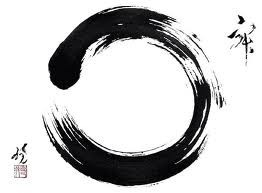

Analysis of the Sandokai
Provisional English translation — awaiting review and approval.
Réal Genest Sensei — Originally published: 2018-09-24
謹進觸承事萬明當當本然眼火四闇色迴門執靈人竺 石 白歩目言存物暗暗明未於色熱大合本而門事源根土 頭 參非不須函自各中中須一耳風性上殊更一元明有大 參 玄近會會蓋有相有有歸一音動自中質相切是皎利仙 同 人遠道宗合功對明暗宗法聲搖復言像涉境迷潔鈍心 契 光迷運勿理當比勿勿尊依鼻水如明聲不迴契枝道東 陰隔足自應言如以以卑根香濕子明元爾互理派無西 莫山焉立箭用前明暗用葉舌地得清異依不亦暗南密 虚河知規鋒及後相相其分鹹堅其濁樂位迴非流北相 度故路矩拄處歩睹遇語布醋固母句苦住互悟注祖付
SANDOKAI
The mind of the great Indian sage has been transmitted mutually, intimately, from west to east. In their ordinary nature, human beings discriminate, creating acuity or ignorance, but on the Way, there is neither a Northern Patriarch nor a Southern Patriarch.
The spiritual source shines in the light, but its streams flow in darkness.
Recognizing illusion in phenomena is not yet the spiritual realization of Awakening.
The senses and their objects interpenetrate and do not interpenetrate. If they do, there is harmonious encounter; otherwise, each remains in its position. The essence of all visible objects possesses qualities and images differing with each object. The sound of the voice changes according to whether it expresses joy or suffering. In darkness, high and low merge; in light, purity and defilement are distinguished.
The four elements return to their nature just as a child turns toward its mother. Fire heats, wind moves, water wets, earth is solid. For the eye, sights; for the ear, sounds; for the nose, smells; for the tongue, flavours. All existences, like the leaves of trees, are nourished by roots. Origin and end meet in emptiness. Noble or vulgar, as you wish!
Within light there is darkness; do not take it for darkness. Within darkness there is light; do not regard it as luminous. Light and darkness create an opposition, but depend on each other like the front foot and back foot in walking.
Everything that exists has its use. Use it appropriately. Phenomena and essence fit together like box and lid, like the meeting of two arrowheads. Hearing these words, understand their meaning without entering into your personal conceptions.
If you do not understand the Way beneath your feet, how will you know where you are walking? As you advance, it is not a matter of near and far. But in confusion, mountains and rivers bar the road.
You who study the mystery of Life, I beg you, do not waste time on vain searches or dissipate yourselves in illusory doctrines. Everything is here and now.
The Sandokai text was written by Sékito, Stone Head, 700–790. This poem is the essence and synthesis of Zen.
Sandokai
Harmony between difference and equality, or Essence and phenomena interpenetrate, or Fusion of difference and identity.
The left hemisphere creates difference; the right hemisphere goes beyond differences and harmonizes them in a single authentic vision.
The mind of the great Indian sage has been transmitted mutually, intimately, from West to East.
The Buddha's teaching was transmitted from India to the Far East, and now we can add, from East to West: from the Orient to the Occident. In both cases, transmission takes place through an oral network, from masters to disciples, and rests on the spiritual experience of Siddhārtha Gautama, or, in Japanese, Shakyamuni, the unique one of the Shakyas. The Shakyas were the warrior clan, second in the hierarchy of Indian social castes. First were the Brahmins, the priests, and last the untouchables.
At the instant of his illumination, the Sage Shakyamuni realized that human consciousness was in symbiosis with cosmic Consciousness. This intuitive vision was an authentic revelation of the mind.
He devoted his life to teaching a method to help humans also reach this spiritual fulfilment, through their own will.
He was “the finger pointing at the Moon”. Masters impose no truth; they show the way toward Awakening.
In Japanese, this awakening is called “Satori”, awakening to the totality of the Cosmos. Satori is not an intellectual conclusion but an intuition of the individual's wholeness in relation to Life, Death and the Universe.
The word “buddha” (buddha in Sanskrit and Pāli) is not a person's name, not a proper noun. It is an epithet, an adjective, the substantivized past participle of the Sanskrit verb BUDH-, budhyate, meaning, among other things, “to awaken, wake up, regain consciousness, observe, recognize, understand”, and also “to awaken, wake, revive, cause to observe, draw attention, make understood, inform, advise”.
According to Zen Buddhist tradition, Shakyamuni's teaching arrived in China, from West to East, with the monk Bodhidharma, in Japanese 達磨 Daruma, a Tamil Buddhist monk from southern India, and founder in China of the Chan school: a contemplative current (dhyāna) of Mahāyāna that became the Zen school in Japan. In the New Collection of Biographies of Eminent Monks, Daruma arrived in China during the Liu-Song dynasty (420–479), a view accepted by most specialists, whereas the Anthology of the Patriarchal Hall places his arrival under the Liang (502–557). All sources agree in situating most of his activity in the kingdom of Northern Wei.
Beginning with Daruma, Zen was translated from Sanskrit into Chinese and thus developed a specifically Chinese approach. This vision spread throughout the Far East. In Japan, Zen was renewed by Hui-neng, Yeno in Japanese, born in 638 and deceased in 713. From the eighth century, Hui-neng's work, The Sermon of the Sixth Patriarch, occupied a prominent place in Zen. Today, Zen is increasingly entering the West, and another transformation is adapting Sakyamuni's teaching. For some fifty years, many Zen monks have settled in Europe and America to spread Zen teaching. With time, this teaching, planted in different soil, is growing and taking on the cultural flavour and colours of the West. Zen goes beyond culture; it plunges into the individual's right hemisphere, into creative and spiritual intuition. Zen breaks all social conventions. In fact, Buddhism questions everything.
Master Taisen Deshimaru declares that if we wish to reach the essence of Buddhism, Satori, we must involve our entire body in our search, not only our brain. Kobudo teaching requires individuals to involve their body and consciousness in practising their discipline. Kobudo is transmitted mutually and intimately between teacher and student. The disciple's quest is not technical performance but, through practising a discipline, unifying the instrument of practice, body and consciousness into ONE, opening the experience of the Buddha's mind and transcending fear of death: acquiring the warrior's letting go.
In this approach, Western individuals are not required to engage in Zen rituals. Zen is not a religion but a spiritual approach providing psychological tools for the liberation of individual consciousness.
In their ordinary nature, human beings discriminate, creating acuity or ignorance, but on the Way, there is neither a Northern Patriarch nor a Southern Patriarch.
“The teaching of all buddhas exists from the beginning in our own mind. Seeking the mind without our own self is like fleeing far from one's father.” — Zen Master Jinshou, Southern Zen School
Human beings in their natural state have a way of perceiving reality. The state of awakening, Satori, is not an acquisition, as though one were accumulating techniques or kata, or memorizing large numbers of Buddhist sutras. All this acquisition has no effect on our personal fulfilment. Quite the opposite: if this accumulation becomes an instrument of pride and satisfaction, we plunge into the abyss of ignorance. We put more weight on our backs. Instead of freeing ourselves, we attach ourselves more firmly to our ignorance. We put another head on top of our own!
In Buddhism, ignorance is not a lack of knowledge but an excess of erroneous notions. These notions influence our perception and understanding of the world. Ignorant individuals are convinced that what they perceive is reality or “truth” and feel no need to question it. This conviction is the most treacherous thing in the human mind. An enlightened or even sensitive mind will intuitively question all the values poured into it by community, religious and educational establishments.
In kobudo, ignorance consists in attaching oneself to technical performance, seeking victory, being dazzled by technical aesthetics, or attaching too much importance to reputation. Gratification perverts the discipline and contaminates the mind of those who feed on ranks and trophies. In studying kobudo, the process must continue with patience and an open mind. No master possesses “Truth”; a master can transmit only experience and a path.
Shakymuni says:
“Believe nothing on the faith of traditions, even when they have been honoured for many generations and in many places. Do not believe something because many people speak of it. Do not believe on the faith of sages. Do not believe what you have imagined, persuading yourselves that a god inspired it. Do not believe solely on the authority of masters or priests. After examination, believe what you have experienced yourselves and recognized as reasonable.”
“Act like jewellers who examine gold by hammering it, cutting it and checking it in different ways. See whether the gold is genuine or false by heating it. In exactly the same way, do not believe or accept my teaching simply because you respect or love me. That is not sufficient reason to believe my teaching.”
“Be your own torch! The awakened being questions everything, while the ignorant person languishes beneath a mass of mistaken perceptions under which they have been buried throughout their existence.”
The student of “kobudo” begins on the Way by questioning everything. They must relearn breathing, walking, sensing their movements and becoming familiar with a weapon… Spiritually, students must explore the relationship between consciousness, weapon and body. A symbiosis must develop if they wish to experience Reality and enter the Way of Awakening. In an armed confrontation, the winner is the one able to sense the opponent's intentions. Technical skill or the school's martial tradition are secondary if the opponent intuitively grasps the attack you are about to launch. This intuitive perception belongs to the right hemisphere.
In the right hemisphere, opposites vanish; only the decisive instant between death and victory manifests. The invisible is perceived by the right hemisphere.
The different Buddhist traditions are merely varied approaches to the same spiritual experience. The diversity of individuals calls for different methods and ways of travelling the Way. Some prefer the monastic way, others martial ways, others aesthetic arts, or everyday life directed toward spiritual fulfilment. Each chooses the way that suits them. On the Way, schools are unimportant.
The Buddha's Way is One. Labels — Zen, Tendai, Shingonshu, Soto, Rinzai, north or south — are arbitrary and have no influence on the quality of Satori. If we understand SANDOKAI's teaching, we transcend the particularities of schools to experience totality: Satori.
The spiritual source shines in the light, but its streams flow in darkness.
The spring emerging into light is the result of a long underground journey through darkness and the cold depths. The Unconscious nourishes consciousness, and consciousness grasps the luminosity of the unconscious. Surface water returns to the earth's depths to purify itself. When we drink from this emerging spring, we do not reflect on the water's journey; its coolness in our mouth quenches our thirst and gives us great joy. The present moment: here and now! If this pure water, at its first appearance outside, is contained in a vessel and stops flowing, it quickly loses its purity. Truth imprisoned in texts loses its vital energy. Zen flows through the centuries and constantly renews itself, like river water. Each time we plunge our hands into the river's current, we draw renewed, fresh water.
A Zen master was asked, “What is Zen?” He replied, “Show me the face you had before you were born of your parents.”
In other words, “What state was your consciousness in before people began piling ideas, myths and beliefs into it?” A child's consciousness is in harmony with Life. To reach this consciousness, it is useless to accumulate intellectual knowledge; instead we must clear the space and keep only what corresponds to our light. The Christians' sage, Jesus, said that “one had to become children again”. If we wish to reach our full consciousness as children do, we must remain open to Life. To know the Universe, there is study; to experience this Universe, the tools are intuition and the right hemisphere. No so-called “sacred” text or religious dogma can reveal this spiritual intuition to you.
In a combat situation, the secret of managing matters in our favour is to sense the opponent. To do so, we must abandon all hostile intentions toward them. We must open ourselves to them and encompass them within the environment penetrating us from all sides. This welcome allows my unconscious to listen to the other. This symbiosis reveals their intentions and the moment when they will act. If we adopt a rigid position against them, we concentrate on them, close ourselves off, isolate them from our surroundings and no longer sense them. They are then in a position to defeat us. For a tree to bear fruit in full light, it must send its roots into the depths of the Earth. Light and darkness nourish the same reality: the fruit.
Recognizing illusion in phenomena is not yet the spiritual realization of Awakening.
Phenomena are essence (emptiness), and essence is nothing other than phenomena. Harmonize individual consciousness and Cosmic consciousness.
All phenomena arise from a cause: an impersonal cause inherent in the very nature of things. All manifestations of matter, life and consciousness result from a chain of causes. Matter is an aggregate of elements coming together to form its different facets. The same is true of life, beginning with a single cell and bringing other cells together to form tissues, organs, structures and a living organism. Through its life experiences, the living organism becomes more complex and gives rise to more experienced individuals. Life forms diversify, and their organisms become more complex. The more living aggregates become complex, the more they evolve. Then comes the moment when the living organism has reached the limit of its organic evolution and must go further, to another stage of evolution. Its complexity is therefore ready to receive consciousness.
Cosmic Consciousness can thus manifest in these new living organisms. Human Consciousness is also an aggregate of elements compiled by the senses, memories, emotions, experiences, observations, instincts, intellect and intuitions.
Science confirms that the individual is an aggregate of particles, from cells to quantum strings of energy. Furthermore, the individual is also the sum of their senses, their experiences through those senses, emotions, sorrows, joys, reflections, ideas and convictions. If you separate all these elements, where is the individual?
“The Individual is a puppet manipulated by quantum strings.”
Our universe, the Universe and, by deduction, all the other Universes discussed in quantum physics are impermanent and perpetually changing. Everything that exists in these Universes is also impermanent and changing. Nothing, nothing is motionless, immutable and eternal. Everything changes and is therefore illusion. Recognizing that illusion governs our perceptions is rational, but brings no experience of spiritual Awakening.
Hoping to experience spiritual Awakening through books is like studying birdsong using stuffed specimens.
Even when we understand the relationship between humanity and the Universe, the natural mechanisms deceiving our perception and creating the illusion of a solid, unchanging world, we have not yet grasped the deeper meaning of things. There is only one truth: everything is impermanent and perpetually changing. We know without understanding. Even if we finally understand, that is, with our left hemisphere, this is not yet “Satori”.
It is not enough to know all the secrets of making a great Wine; one must taste it to become acquainted with it. Becoming acquainted with Life and the Universe is Satori. After that, all is said.
Science explains that when we plunge into a river or pond, water molecules separate to envelop our body; then we move forward using the molecules' resistance. Here we are making a rational analysis of a situation. There is nothing romantic in such a perception, nothing inviting us to dive in. But on a very hot day, the experience becomes sublime and refreshing.
For me, Zen is this instant of happiness that recalls the joy of being alive and feeling this present, exuberant moment when our whole being bathes in a sea of freshness.
Facing the enemy, sword drawn and blade pointing toward them, the brain enters a state of stress; it is aware that death may result from engaging in confrontation. The left hemisphere runs wild, wanting to analyse everything and find the best technique or strategy.
All this cerebral activity is stimulated by sensory perception and imagination working chaotically. At the root of this disorder is fear of death. Buddhism tells you this fear rests on the ignorance conditioning our perceptions. If the brain has become familiar with death, the individual will cut communication with the left hemisphere, enter the present moment and let the right hemisphere manage the situation. This is letting go.
The right hemisphere opens to the enemy without any hostile feeling and senses the other's intentions. In an open state of mind, the individual will make “awaseru” with the opponent. In such a moment of symbiosis, the opponent unconsciously senses they are not in a position to win; in that case, they sheathe their sword and leave.
Or, at the moment of attack, your unconscious will allow you to wrench the sword from the opponent's hands. This technique is called Muto, meaning “without a sword”.
The senses and their objects interpenetrate and do not interpenetrate. If they do, there is harmonious encounter; otherwise, each remains in its position.
The senses are the gateways to our being. Our senses, including our “mind”, reveal the cosmos to us, and the Cosmos reveals us to ourselves. Outside “awaseru” with the Cosmos, each remains in its position, yet they interpenetrate in the depths of Life. The Universe is a gigantic web woven from cosmic fibres. Modern psychology speaks of Perceptions conditioned by our upbringing and the values transmitted to us. Our perception of the world has been conditioned since earliest childhood. This conditioning colours our view of the world. “Satori” reveals the world in its true colours.
Our senses — sight, smell, taste, touch, hearing and consciousness — work in unison to bring us into contact with the world and help us understand it. But our senses are limited compared with those of other animal species, so we have an approximate idea of the Universe. Through technological development, we have compensated for the deficiencies of our senses and, over time, corrected our outlook and relationship with the Universe. The Universe is an encounter of light, sounds, vibrations and all the elements that form Life.
The individual comes from the Cosmos, and the Cosmos becomes aware of itself through the individual's consciousness. Yet each remains in its position.
The Sage must always question the reality of things, because the entire Universe is perpetually changing. Nothing is permanent; everything changes. Satori, Awakening, reveals this reality that terrifies the ignorant.
In kata practice, students are aware that they and their weapon are independent entities. When weapon and student interpenetrate and become one, students experience symbiosis at a primary level. Later, they experience the same process when practising with a partner. All senses are fully awake. The idea is to enter into symbiosis with the person facing us… This is called “awaseru”. In a gradual movement from centre to periphery, consciousness and the unconscious move from sword to opponent, then toward the vast environment and the Universe. Students extend their consciousness and broaden their field of perception. The movement pushing atoms toward one another and contributing to the increasing complexity of matter, life and consciousness also pushes individuals toward a fuller realization of their being. In “Kobudo”, chaos, disorder and aggression must be managed and their effects dissipated while avoiding a lethal response. At the heart of conflict, restore harmony. In a situation showing signs of emerging conflict, the master ensures that no space is given for disorder to arise. In such a situation, minds gradually calm, and harmony takes its place again.
Visible forms may be pleasing or repellent. The sound of the voice varies according to whether it first expresses joy or suffering. In darkness, high and low merge; in light, purity and defilement are distinguished.
The world in which we awaken and move is a world of forms and sounds. Our consciousness seizes forms and sounds and creates a world of knowledge and emotions. Quantum science reveals that the Universe is a construction of “strings of energy vibrating at different frequencies and giving rise to matter in all its forms”. The entire Universe is a construction, and we are a construction of Matter, Life and Consciousness. Remove one of these three elements and we no longer exist. As in the ancient vision, remove one element and the world vanishes. For these elements also underlie Matter, Life and Consciousness.
The Kiai, the shout uttered during training or combat, carries in its sound the psychological imprint of the consciousness expressing it. A discerning master can follow a disciple's spiritual progress by listening to their “kiai”. The precious moment for students is the instant when sword, body and shout interpenetrate, becoming “One”: Ki-Ken-Tai no Ichi.
Students of Kobudo hope to achieve KI-Ken-Tai no Ichi: perfect symbiosis of consciousness, sword and body. The three elements fused into one. In an instant, individuals no longer have form, awareness of holding a sword or a body. Every pleasant or unpleasant sensation vanishes. Consciousness occupies all space. In the Light of that instant, consciousness grasps that it is not the individual, but a ray of the Universe's consciousness animating the individual.
The four elements return to their nature just as a child turns toward its mother.
Our world is an encounter of four elements: Earth, Metal, Fire and Water. Each is a collection of particles; their differentiation is only functional and practical. In daily reality, the elements create the setting in which we live and move. But intellectual Knowledge tells us that behind this setting is an aggregate of particles of energy and matter produced by the Cosmos. Wisdom reveals that we are this matter, this energy and this consciousness. I am made of stardust, and my atoms gave birth to the Buddha.
The individual's Consciousness is a synthesis of sensory activities, emotional activities, thought mechanisms and all images received or created during reflection.
At the moment of Ki-Ken-Tai no ichi, sword, Consciousness and body are unified in perfect symbiosis; there is no longer Ki, Ken or Tai; there is only wholeness, without limit or name. The unconscious reveals itself to Consciousness.
Human consciousness returns to its source: Individual Consciousness merges with its mother, Cosmic Consciousness… After combat, after brushing against death, the warrior rediscovers the peace of Life.
Fire heats, wind stirs, water wets, earth supports. For the eye, sights; for the ear, sounds; for the nose, smells; for the tongue, flavours. All existences, like the leaves of trees, are nourished by roots. Origin and end meet in emptiness. Noble or vulgar, as you wish!
Our environment is bathed in the energies of seasons and all the forces vibrating in Nature. Our senses put us in contact with an illusory world in constant change. Our eye cannot perceive itself, yet when it looks upon the world, the world may seduce our consciousness or force it to look behind appearances. In Buddhism, this is called Right View, which is Wisdom. Wisdom guides us on the Right Way, beyond the conflict born of opposites. Whether noble or beggar, consciousness lies beyond this artifice.
Our existences are an aggregate of all the information our senses give us. This information takes the forms, colours, flavours and dimensions particular to our psyche. If we wear rose-coloured glasses, all the world's true colours will be tinted pink and thus distorted.
The warrior's apprenticeship aims at detachment from everything that might harm them in a decisive combat or in life. They must let fear of death, emotions of hatred and passions wash over them, feeling calm and serene amid storms and bad weather. Consciousness looks beyond life and death; in Zazen, there is no longer Life or death, only the consciousness of being without limits and everywhere. After Zazen, this experience reveals another face of existence. It is not new, but we have just discovered it through the experience of Here and Now.
A Zen master was asked to express Life and Death. He took up his brush and drew a circle. Pointing to it with his index finger, he said: “In the infinite universe, Life and Death coexist! Nothing outside!”

Within light there is darkness; do not take it for darkness. Within darkness there is light; do not regard it as luminous.
With Birth, death is born. Life coexists with Death. That said, whoever receives the privilege of being born must accept that this privilege is temporary. Nothing is eternal, even the Universe. Do not let the idea of Death darken the joy of having enjoyed such good fortune.
The World we perceive through the Left Hemisphere is fragmented into linear time, with a past, present and future; it is a construction of our perceptions, beliefs, knowledge and errors. We have blind faith in our reason and logic, whereas Wisdom teaches that the world is more, much more. We venerate reason like the beggar clinging to his bag! The scholar's dog has greater experience of the World than its pedantic master. Yet it does not boast, remaining faithful, helpful and devoted to its ignorant biped companion. Reason and intuition must illuminate us and dispel the darkness of ignorance.
The practice of “kobudo” aims to establish consciously the connection between the left and right hemispheres.
It is said that the eye observes what is visible in the opponent, while consciousness senses what is invisible or hidden. If my consciousness perceives the opponent's intention, it can foresee the action to come, master the other's anger and avoid killing them. The master protects Life; the ignorant person sacrifices it in pursuit of glory.
Light and darkness create an opposition, but depend on each other like the front foot and back foot in walking.
Our body is said to be material, living matter, and our mind immaterial. We conclude that these two elements unite to give us birth. Yet “mind” is cerebral and nervous activity, a complex neural network traversed by an intense electric current. Our body's cells are kept alive through brain activity. Body cannot exist without “mind”, and mind cannot manifest without body.
We live in a world of opposition; it is our daily reality. Our brain decodes the physical world through two hemispheres, each interpreting the world according to its own mechanisms. If we accommodate ourselves to these oppositions, we remain at the elementary level of human understanding. We must go beyond!
The left and right hemispheres reveal the world according to their nature. Even though their roles differ — logic versus intuition, analysis versus synthesis — both are necessary, and individuals cannot function with only one. What the right hemisphere grasps intuitively is recovered by the left and made intellectually intelligible. In daily functioning, intellect and reason are necessary instruments, but grasp only part of reality. Human beings are multidimensional. They also need emotions, creativity and beauty. Their right hemisphere manages spiritual fulfilment.
Another mistaken perception, propagated by certain doctrines, is that humans consist of a mortal body and an immortal soul. This vision is strange to a Buddhist and accords with a follower of the Middle East. For the Buddhist, the individual is neither one nor the other, but both at once. Physical senses transmit information about the outside world, and different facets of consciousness structure these data according to the individual's conceptions and certainties. Yet these certainties have no more reality than the data.
Physical being and mind give the illusion of opposition. Neither can exist without the other. To authenticate Life, the two concepts must interpenetrate until individual dissolution.
The Sandokai sutra guides us toward enriching learning. As the sword and I are two different objects, SAN, through practice my consciousness absorbs the sword; it becomes my extension: no more sword, no more me. This is the “DO” stage, where identities vanish, and finally this experience of fusion, of “awaseru”, plunges my consciousness into a new experience, a new awakening: KAI.
See the definition of Sandokai on this site: Sandokai — 參同契.
In combat with swords drawn, SAN identifies the opponent and me, two entities. I can centre on the opponent and focus my attention on my determination to kill them. If the opponent pursues the same goal and is technically excellent, both combatants risk killing each other. If the opponent is weaker, I may win; if they are more skilful, I will certainly die. Here combat lies at the level of the human animal's consciousness. But if one combatant enjoys an enlightened, humanized mind, they will free themselves from all warlike intentions, calm their consciousness and open to the opponent. This means welcoming the other without prejudice or aggression. To do so, they position themselves to ensure both their own and their opponent's safety. This stage is DO: no more opponent, no more incitement to combat. Listen to the other; let Ki circulate from one consciousness to another.
Masters called this instant the guard without an opening. We are not speaking of a technical opening, or creating one by lowering the sword tip to provoke an immediate response and draw the opponent into a deadly trap. The two opponents face one another, and the opponent's consciousness senses that the other combatant's consciousness envelops them, is present and occupies all space. There is nowhere to move, no moment to attack. They are defeated before any action. In Yagyu Shingake ryu, this moment is called “Muto”: disarming the opponent, “taking away their sword figuratively”.
Intuitively realizing their fragility, the opponent disengages from combat. This stage is KAI. Both combatants' consciousness has just shifted to another level of intuitive perception of Pajna, of the reality behind daily reality. Prajna is the primary condition for Satori, but is not yet Satori.
Everything that exists has its use. Use it appropriately. Phenomena and essence fit together like box and lid.
Life cannot exist without matter. Matter carries potential life within it, because life can take root only by attaching itself to matter.
Life evolves by becoming increasingly diversified. This is a way to ensure its continuity and duration. Each of us draws from it what is needed for survival. Essence and existence are intimately linked; neither can exist without the other. Life is a privilege given to you: use it with Wisdom. If you understand Life's value, you will not need an afterlife.
At the end of our life, the only thing that will survive us is our contribution to the community. Our works survive through others, and our existence finds its full meaning there. Artistic works continue to live because they meet human needs; great fortunes, sooner or later, vanish and disappear from humanity.
Kobudo's mission is to awaken ordinary human beings to a reality they did not know. Kobudo and Zen fit like box and lid. “A thought-out movement is a missed movement.” Repeating the same movements and kata 1,000 or 10,000 times is far from useless. Ask a potter! Their hands encircle the lump of clay, and thousands of revolutions are needed before the desired piece emerges. Thousands upon thousands of cuts into empty space with a sword are needed for the individual's consciousness to achieve “awaseru” and allow Sandokai to arise: the unthought movement resulting from perfect fusion of consciousness (ki), sword (ken) and body (tai).
Like the meeting of two arrowheads. Hearing these words, understand their meaning without entering into your personal conceptions.
Two arrows shot into the sky by archers facing each other without seeing each other have as much chance of meeting and colliding in mid-flight as a sperm has of fertilizing an egg. Being born is an unimaginable privilege, a one-in-300-million chance. Accept and cherish the life imposed on you; take responsibility for it to the end. You are here to enrich Life and Humanity. Grasp the profound meaning of the privilege given to you. What you make of it will become the Karma of your community, society and Humanity. What survives you is what you bring to others. Individual salvation, the idea of a paradise or a better reincarnation, belongs to fantasy and ignorance. We do not seek satori to save our illusory person, but to enrich and advance cosmic Consciousness, Life and our Humanity. The Royal Way, Mahayana, lies in a greater humanization of the collective.
During practice, both combatants invest themselves in a combat in which every movement, attack or defence finds its source in the unconscious, moving outward in a precise technique. In such a situation, a thought-out movement is a missed movement.
Satori bursts forth in a spontaneous moment without announcing itself. When fruit is ripe, it detaches and falls. In Kobudo, this instant illuminates the profound meaning of what motivated us in studying our art.
If you do not understand the Way beneath your feet, how will you know where you are walking?
We practise kobudo and zazen solely to help us silence the left hemisphere and encourage listening to the right. In Life as in Death, our outlook must remain serene.
The Right Hemisphere is the centre of communications with Cosmic Consciousness. In our evolutionary process, homo sapiens made choices, favouring the use of the Left Hemisphere over the right. If humans wish to realize themselves fully, they must conquer the cosmic dimension of their being.
In Kobudo, we begin our spiritual quest by learning to breathe properly, walk properly, feel, centre our body properly and move properly. Awareness of our body places us in communion with Life and, as we progress, with others. Our perception must overflow the limited vision of our person and environment to embrace the Cosmos. Cosmic consciousness is the Consciousness of the Buddha, the Awakened One. Beyond cultures and cultural myths, deep within each individual in this Universe lies a buddha, an Awakened One. When we walk, there is no right step or left step; we walk and move without thinking about each step. Imagine if a centipede had to think about every step! If the body is well integrated into consciousness, it moves harmoniously without thought. Harmony arises from spontaneous movement. A thought-out movement is a missed movement. In the martial Way, movement must be spontaneous and harmonized with the opponent's, otherwise death will be the outcome. Our fellow human is the gateway to humanity and the Universe.
As you advance, it is not a matter of near and far. But in confusion, mountains and rivers bar the road.
The journey must take place “here and now”, without looking far ahead and analysing the path to travel, or looking back to appreciate the distance covered. There are no rewards or trophies at the end. The ego has nowhere to lean. Obstacles lie not on the Way but in the pilgrim's mistaken perception. A salutary moment comes when the pilgrim is crushed beneath concerns and questions. In an act of survival, the mind lets go and accepts that it cannot control everything. Individuals are freed and can now walk the Way with a light step.
During kata practice, the two combatants advance with weapons drawn, each listening for the right moment to launch an attack. Perception must rest on feeling. Too far away, the sword cuts empty space and the opponent can counterattack; too close, the opponent can block or evade and strike the target. There is an entire strategy here that the combatant must study, beyond the scope of this short Zen presentation. Perception of reality is subject to the mind's games.
You who study the mystery of Life, I beg you, do not waste time on vain searches or dissipate yourselves in illusory doctrines. Everything is here and now.
The Way is not a journey isolated from Life but a renewed outlook on daily life. The great illusion is believing that we are merely an individual isolated in a body of flesh. The Buddha's mind reveals that our consciousness and Cosmic Consciousness resonate with each other like tuning forks in resonance. Suspend several tuning forks (humanity) of different pitches from a string.
SAN: do, re, mi, fa, sol, la, si, do.
Take a large RE tuning fork (Universe) and strike it.
The RE sound suddenly emerges from the large tuning fork, fills space and makes all the other RE tuning forks sing. This communication causes their song to fill space in unison, and you can no longer distinguish each individual's RE song. This is the moment individuals lose their individuality and merge with the Universe. When the two entities resonate, both vanish, and only the cosmic RE sound remains: no more individual consciousness, no more Cosmic Consciousness; only the song of Life, of the Universe.
DO: Individuals become totality, become the Universe. The Universe is formed from each pitch, like a cosmic symphony. Each pitch finds its source and consciousness there. Each individual's tonal nature finds its original source: all differences and individualities vanish. After such an experience, individuals are “awakened” to cosmic consciousness, to Satori.
When this “experience of wholeness” has done its work, the individual's consciousness has shifted, and a renewed reality is revealed. This new consciousness is KAI.
End
This analysis of the Sandokai is protected by copyright. May not be reproduced without authorization. Réal Genest, March 31, 2012. Kaicho and Shihan of Sandokai Kobudo Shugyokai.